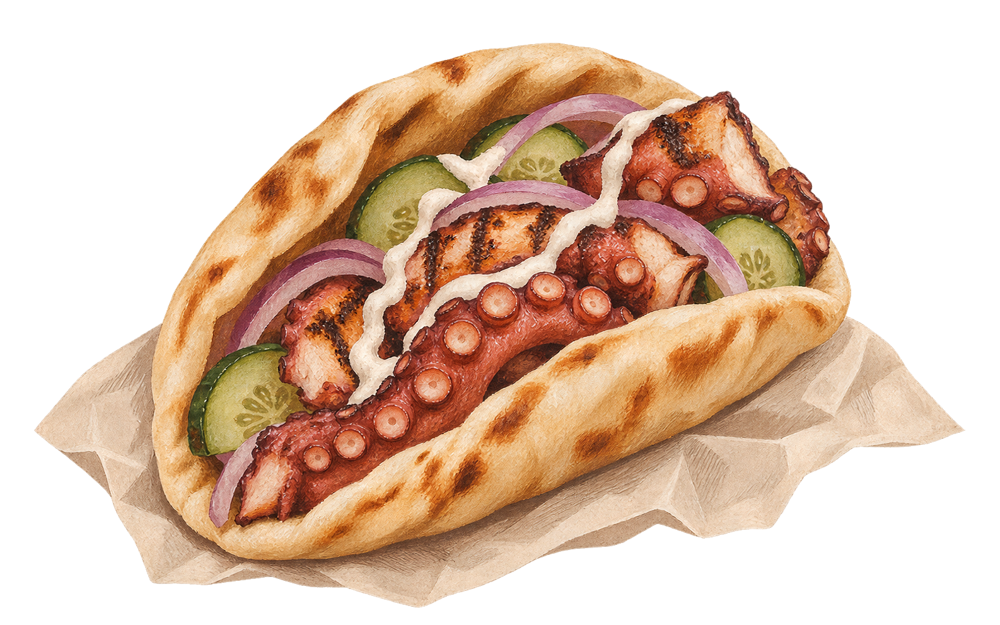
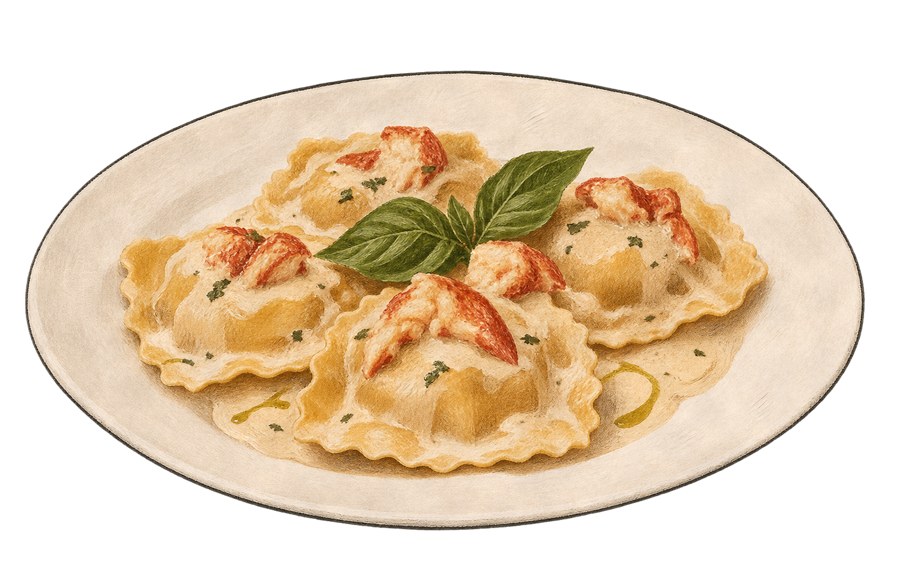

Gyros y tacosGyros & Tacos

Pan pita con pulpo braseado (45 g), arúgula, tomate, pepino y cebolla morada. Con tzatziki, chimichurri de la casa y ceniza de habanero.Pita bread topped with braised octopus (45 g), arugula, tomato, cucumber and red onion. Served with tzatziki, house chimichurri and habanero ash.
EntradasStarters
Láminas de pulpo cocido (90 g) con arúgula fresca, piñones tostados, limón real, reducción de balsámico y aceite de oliva extra virgen.Thin slices of cooked octopus (90 g) with fresh arugula, toasted pine nuts, lemon, balsamic reduction and extra virgin olive oil.
PastaPasta

Ravioli en salsa de shiitake, portobello y cremini, con kombu y fumet de langosta (5 piezas).Ravioli in a shiitake, portobello and cremini mushroom sauce with kombu and lobster stock (5 pieces).
FuertesMains
Pulpo braseado y pork belly frito glaseado en teriyaki, con hongos salteados, arúgula y puré de zanahoria al curry (190 g).Braised octopus and crispy pork belly glazed in teriyaki, with sautéed mushrooms, arugula and curried carrot purée (190 g).
Salmón canadiense de piel crocante (180 g) sobre puré de elote amarillo asado y salsa cremosa de miso, con ikura, pepino encurtido, poro crujiente y aceite de cebollín.Crispy-skin Canadian salmon (180 g) over roasted yellow corn purée and creamy miso sauce, finished with salmon roe, pickled cucumber, crispy leek and chive oil.